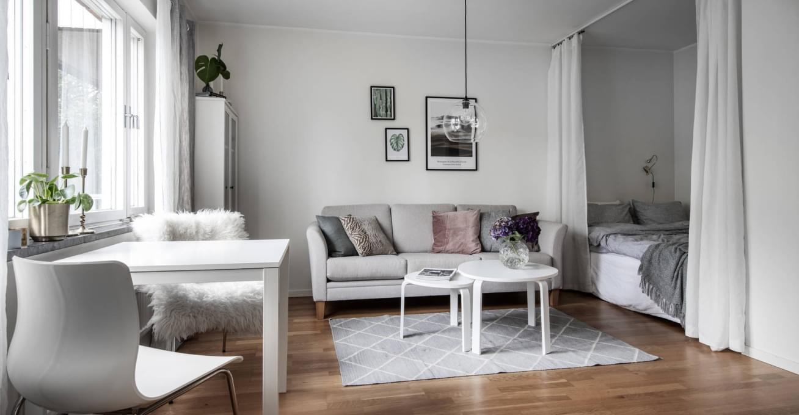

Как расположить мебель в каждой комнате?
Прежде чем приобрести мебель, определитесь, как расположить мебель в каждой комнате дома. Всегда можно сделать предварительный чертеж по расстановке каждого предмета.
Каждая комната имеет свои функции, в зависимости от которых стоит расставлять мебель правильно и удобно. Расположение каждого элемента должно доставлять хозяйке удобство, а не дискомфорт и необходимость в дополнительных манипуляциях.
Что учитывается при расстановке мебели в квартире:
- Форма и размеры комнаты
- Ежедневные передвижения по комнате.
- Функции того или иного предмета.
Сегодня каждый мебельный салон и интернет-магазин может предоставить предварительную схему расположения с помощью компьютерной программы, а также покупатель может сам создать эскиз расположения мебели в помещении на листке бумаги.
Мало устроить красивую и гармоничную обстановку, необходимо сделать это максимально комфортно и функционально.

Расположение по комнатам
В данном разделе мы дадим Вам несколько советов о том, какой должна быть расстановка мебели в каждой комнате.
- Для спальни стоит выбирать шкаф в тон со стенами, чтобы он не сильно выделялся. Кровать лучше поставить поперек комнаты, а шкаф у стены, так Вы сохраните больше пространства. Если спальня используется в качестве рабочей зоны, лучше разделить пространство с помощью коврика или стеллажа.
- Гостиная - самая большая комната в доме. Здесь стоит разделить комнату на зоны с помощью дивана, кресел или стеллажа. Часто в гостиной располагается кухня или зона отдыха. Зона отдыха вместе с диванчиками и креслами лучше всего будет смотреться у окна.
- Кухня – царство хозяйки дома. Здесь все должно быть под рукой и максимально удобно для нее. Основной тон и атмосферу задает кухонный гарнитур. Поэтому, стоит отнестись к выбору мебели для кухни со всей ответственностью. Мебель располагается таким образом, чтобы перемещений было как можно меньше. Обеденный стол лучше поставить у окна, а если размеры помещения позволяют – под люстрой в центре комнаты. Если кухня совмещена с гостиной, то можно расположить плиту и зону для приготовления еды в центре комнаты, чтобы не прерывать общение с гостями, которые будут сидеть в гостиной.
Расстановка мебели в узкой комнате
В каждом доме есть узкая комната прямоугольной формы. Как правило, расставить мебель в узкой комнате достаточно проблематично. Однако, есть несколько правил, которые помогут обустроить комнату с комфортом:
- Применяйте зонирование помещения. Ширмы, перегородки и стеллажи Вам в помощь. Также перпендикулярное размещение мебели поможет Вам правильно зонировать комнату.
- Многофункциональная мебель, к примеру, раскладной диван, поможет сохранить пространство.
- Для зрительного расширения комнаты используйте зеркало или мебель с зеркальной поверхностью.
- Обои или покраска стен должны быть светлых тонов, а цвет мебель на несколько тонов темнее стен.
- Расположение мебели в одном углу комнаты, с ассиметричным расположением ковра сделает комнату более гармоничной.